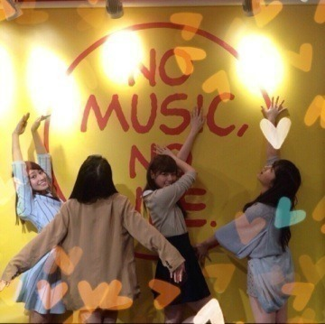

| 2014/06 03 Tue | 気付くの遅え！575回目 |

16人のプリンシパルtrois
が始まって5公演目。
今日は休演日です。
頭冷やして休んでいました！
立候補したのは
エステル
パム
ルイーダ☆
エルザ☆
エルザ
☆は選ばれたときです。
私はまだ何も出来ていません。
最悪な状態。
こんなの私じゃない。
まず、これは一幕から
舞台であるということ。
もう一度自分と向き合って
話し合わなきゃいけない。
考えろ考えろ考えろ
コメディだからって正直、
気楽になんてできないよ。
これは舞台だから。
来てくださる方は
真剣に選んでくださいます。
本当に嬉しい。
だからこそ、頑張らなきゃ。
弱気になってはいけません。
もっと私を見てほしい。
今回はどんな役でも
挑戦していくつもりです。
頑張ります！
楽しみます！
......
乃木どこ
生駒里奈、総選挙への道！
まいやんからの提案があって
みんなとメールしたんです。
その時何度も乃木坂って素敵だな
と思いました。
こんな素敵なメンバーがいるんだから
ひとりで抱え込まないで、生駒。
みんな応援しています。
ティッシュ配りは
玲香若月なぁちゃんと
渋谷タワレコでしました！

私なりに支えたいです！
まりか
コメント(615)
2014/06/03 00:30